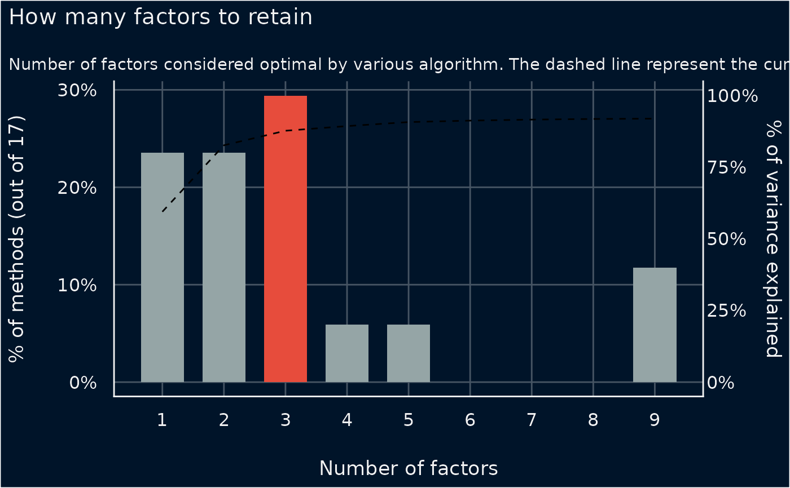
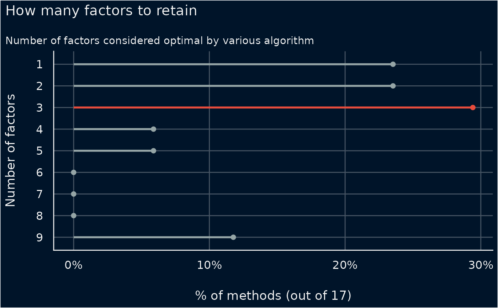
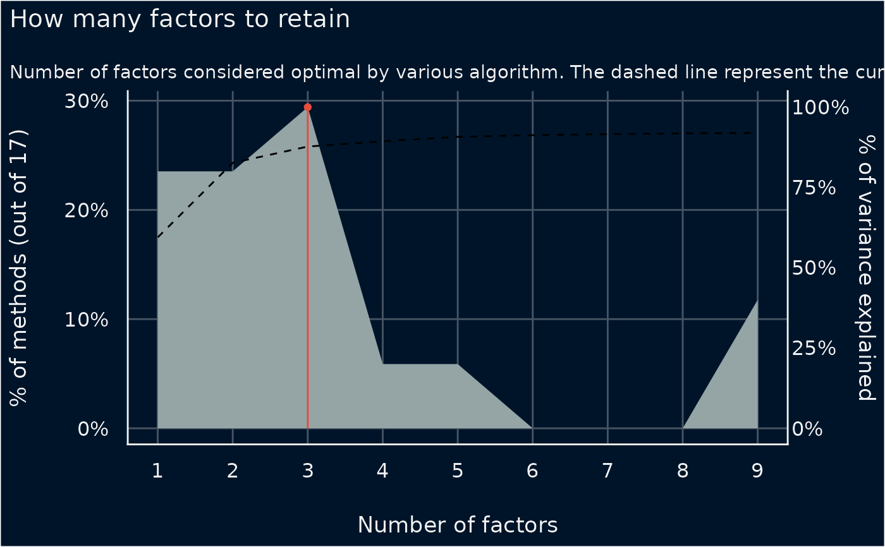

Plot method for numbers of clusters to extract or factors to retain
Source:R/plot.n_factors.R
plot.see_n_factors.RdThe plot() method for the parameters::n_factors() and parameters::n_clusters()
Arguments
- x
An object.
- data
The original data used to create this object. Can be a statistical model.
- type
Character vector, indicating the type of plot. Options are three different shapes to illustrate the degree of consensus between dimensionality methods for each number of factors;
"bar"(default) for a bar chart,"line"for a horizontal point and line chart, or"area"for an area chart (frequency polygon).- size
Depending on
type, a numeric value specifying size of bars, lines, or segments.- ...
Arguments passed to or from other methods.
Examples
data(mtcars)
result <- parameters::n_factors(mtcars, type = "PCA")
result
#> # Method Agreement Procedure:
#>
#> The choice of 3 dimensions is supported by 5 (29.41%) methods out of 17 (Bartlett, CNG, Scree (SE), Scree (R2), Velicer's MAP).
plot(result) # type = "bar" by default

plot(result, type = "line")

plot(result, type = "area")
